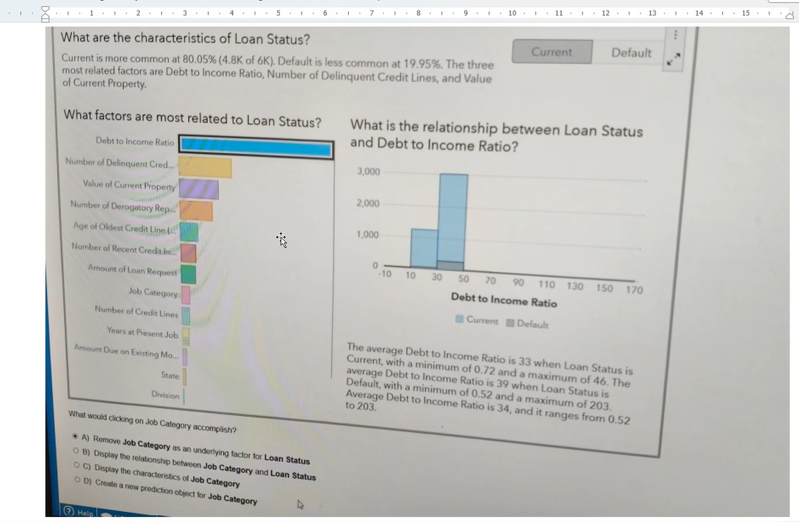

🤖 Automated Explanation & Prediction Quiz ▶
🤖 Automated Explanation & Prediction
Q1 🔥: In the Automated Explanation object, what happens when you CLICK on an underlying factor in the bar chart?

✅ Relationship plot is displayed — "Click on an underlying factor to view the relationship plot."
❌ Removed: Right-click removes, left-click shows relationship.
❌ New prediction: Clicking doesn't create objects.
❌ Removed: Right-click removes, left-click shows relationship.
❌ New prediction: Clicking doesn't create objects.
Q2: What happens when you RIGHT-CLICK an underlying factor?
✅ The factor is removed — "You can remove any individual underlying factor from the right-click context menu."
❌ Relationship plot: That's left-click.
❌ Relationship plot: That's left-click.
Q3: What models does Automated Prediction run for a CATEGORY response?
✅ Logistic regression, Gradient boosting, Decision tree — Category response models.
❌ Linear regression: Used for MEASURE responses.
❌ Linear regression: Used for MEASURE responses.
Q4: How does Automated Prediction choose the champion model?
✅ Category: highest accuracy; Measure: lowest ASE — "Champion Model based on highest accuracy for category, lowest ASE for measure."
❌ Manual: "No manual model selection."
❌ Manual: "No manual model selection."
Q5: Which data items are NOT automatically added as underlying factors?
✅ Aggregated measures and date/time values — Also excluded: calculated items, custom categories, derived items.
Q6: Can Automated Prediction be a source for actions?
✅ No — "Cannot use as source or target of actions" is a key limitation.